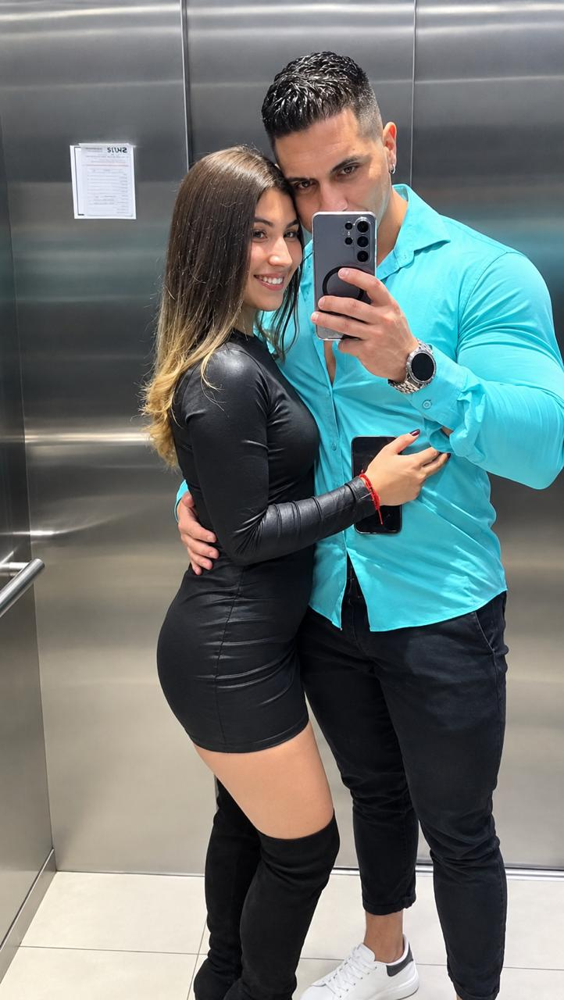

Para usted, mi Javi ❤️
Te quiero mucho.
Para usted, mi Javi ❤️
Hoy se cumplen dos meses desde aquel 26 de septiembre en que nuestros caminos se cruzaron. Dos meses que quizás para algunos pueden parecer poco tiempo, pero que para mí han significado mucho más de lo que imaginé.
Quiero que sepa lo feliz que me ha hecho conocerla, compartir momentos con usted, verla sonreír, abrazarla y sentir esa tranquilidad tan bonita que me transmite cuando estamos juntos.
Sé que no todo ha sido perfecto. Hemos tenido momentos hermosos y también momentos difíciles, pero incluso en esos días he podido darme cuenta de lo importante que se ha vuelto usted para mí.
Y hay algo que quiero que tenga siempre presente: yo la elijo a usted, Javi. La elijo en los días bonitos, pero también en aquellos donde las cosas se ponen difíciles. Porque para mí elegir a alguien no significa estar solamente cuando todo está bien, sino también tener las ganas de conversar, comprendernos, aprender y seguir construyendo algo bonito.
No quiero que tenga dudas de lo que siento ni de mis intenciones con usted. Me encanta tal como es, con sus virtudes, sus miedos, sus locuras y cada una de esas pequeñas cosas que la hacen tan especial para mí.
Quiero que sienta la seguridad de que mis sentimientos son sinceros, que no estoy aquí por un momento ni por casualidad. Estoy aquí porque quiero estar con usted, porque entre tantas personas es a usted a quien sigo eligiendo, incluso cuando las cosas no son fáciles.
Gracias por llegar a mi vida, por cada momento compartido y por hacerme sentir cosas tan bonitas en tan poquito tiempo.
Felices dos meses, mi amor. ❤️
Con mucho cariño,
su Mati. ❤️

De todas las personas que pude conocer, la vida me puso frente a usted. Y si volviera a empezar, volvería a elegirla. Una y mil veces. ❤️